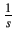
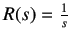
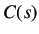
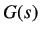
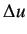
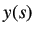
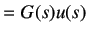
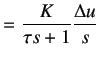

Identification of the transfer function of a system is important as it helps us to
represent the physical system mathematically. Once the transfer function is obtained, one can acquire
the response of the system for various inputs without actually applying them to the system.
Consider the standard first order transfer function given below
Rewriting the equation, we get
A step is given as input to the first order system. The Laplace
transform of a step function is
.
Hence, substituting
 in equation 2.3, we obtain
Solving  using partial fraction expansion, we get
Taking the Inverse Laplace transform of equation 2.5, we get
From the above equation it is clear that for t=0, the value of c(t) is zero. For t=  , c(t)
approaches unity. Also, as the value of `t 'becomes equal to
, c(t)
approaches unity. Also, as the value of `t 'becomes equal to  ,
the value of c(t) becomes 0.632. is called the time constant and represents the speed of
response of the system. But it should be noted that, smaller the time constant- faster the system response.
By getting the value of , one can identify the transfer function of the system.
,
the value of c(t) becomes 0.632. is called the time constant and represents the speed of
response of the system. But it should be noted that, smaller the time constant- faster the system response.
By getting the value of , one can identify the transfer function of the system.
Consider the system to be first order. We try to fit a first order transfer function of the form
to the Single Board Heater System. Because the transfer function approach uses deviation
variables,  denotes the Laplace transform of the gain of the system between the change in heater
current and the change in the system temperature. Let the change in the heater current be denoted by .
We denote both the time domain and the Laplace transform variable by the same lower case variable. Let the change
in temperature be denoted by  . Let the current change by a step of size
. Let the current change by a step of size  . Then, we obtain the following
relation between the current and the temperature.
. Then, we obtain the following
relation between the current and the temperature.
|  |
 |
(2.8) |
|
 |
(2.9) |
Note that  u is the height of the step and hence is a constant. On inversion, we obtain
u is the height of the step and hence is a constant. On inversion, we obtain
rokade
2017-04-23